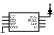

Flashing firmware externally supplying direct power
WARNING: Never use a high current rated power supply, like PC ATX power supply. It’ll literally melt your PCB traces on short circuit.
On some mainboards the flash IC Vcc pin is connected to a diode, which prevents powering the rest of the board.

Please have a look at the mainboard specific documentation for details.
On those boards it’s safe to use a programmer and supply power externally.
WARNING: Verify that you apply the correct voltage!
USB programmer
USB programmers are usually current limited by the host USB hub. On USB 2.0 ports the limit is 500mA, which is sufficient to power the flash. Those are the best choice as they are stateless and have a fast power on reset cycle.
Single board computers (like BeagleBone Black / RPi)
Be careful when connecting a flash chip, especially when using a Pomona test-clip. A short circuit or overcurrent (250mA) causes a brown-out reset, resulting in a reboot of the running operating system (and possible loss of remote shell).